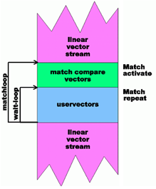
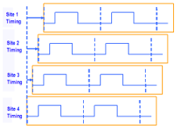

How to set up a multiport EPRC match loop
Multi port match loops can be set up using the EPRC delay. EPRC (Error Propagation Repetition Count) means how often a block of buffer vectors must be repeated before execution of a conditional jump. The vectors within this block are called EPRC vectors in this use case.
For more information on EPRC vectors, refer to firmware command EPRC? - (Error Propagation Repetition Count).
- Overview
- Goal
- Overview of a match loop on the 93000 system
- Multiport match example setup
- The green box: The match vectors
- The blue box: The EPRC vectors
- How long is the blue box?
- Putting the two important points together …
- What if the blue box length I choose is too long..?
- What if the blue box length I choose is too short..?
- Common questions
- Summary of BFLM MATCH-related restrictions
If you are looking for the "give it to me in one slide" version, refer to Putting the two important points together ….
- Goal
Perform a match loop across two or more vector ports, even if one or more of the ports have no strobes and keep them synchronized.
"Synchronized" means that the ports are aligned both within the match itself and coming out of the match and they chose the same direction meaning they go back to the top of the match (green box in the graphics below) or they go to the bottom linear vectors box… all together and synchronized.
Note that throughout this use case, two ports are used to keep thing simple, but the concept is extendable to N ports.
- Overview of a match loop on the 93000 system

A match is composed of- the match vectors (green) which are the strobe vector(s) and …
- the match loop latency (blue) which cannot have strobes.
The blue vectors represent the "hardware delay", this is the time that it takes for the system to evaluate the match loop results in that port and decide if it "tries again" or proceeds to the pink vectors. It is NOT a function of the device latency.
Matches loops have basically two possibilities: "Continue on fail" or abort (default) if the condition is not met after the user specified number of attempts:- Abort means that the entire label is aborted, NOT just that slice.
- "Continue on fail" is specified via an optional argument in the vector editor or via the AIF: See sequencer instruction MACT.
A third option, the "match on fail" is supported with SmarTest 7.5.0 and newer version. The option is set up using parameter values TIL_FAIL_.....
There are other rules about the match loop such as the 7 vectors before the match must not have strobes.
- Multiport match example setup
Assume that we have two ports involved in the match: pASYNC and pNON‑ASYNC:
- The pASYNC port has no strobes, it is just a tester provided clock.
- The pNON‑ASYNC port is where the real strobes are located.
However, you will soon see that a match on this ASYNC port is critical to making this work, even if you think it seems not necessary at this point.
The period of port pASYNC is 10 ns and port pNON‑ASYNC is 100 ns, meaning a 10:1 ratio.
pASYNC @ 10ns
pNON‑ASYNC @ 100ns
- The green box: The match vectors
- The length (in terms of time) of the green box must be the same for all ports to make this work:
- This is not a tester requirement, but a requirement to use MATCH.
- Since the ratio is 10:1 in this example, if the number of vectors in port pNON‑ASYNC is say 500 vectors, the number of vectors in port pASYNC must be 10x that number to maintain alignment.
- This makes sense no matter how you think of it, the length of time spent in the "match vectors" must be the same.
- We WILL have a MATCH statement in port pASYNC that is just the clock!
- There are restrictions in terms of the number of vectors in the green box for BFLM, but not for LMAP.
- For BFLM the number must be a %8 for all ports.
NoteIMPORTANT POINT #1:
The P/F info of all ports is SHARED in a given sequencing group. This means that fails during a match in the green block of port pASYNC, even though it does not have strobes, also are recognized as fails in port pNON‑ASYNC.
This means that a match on port pASYNC will actually "see" fails!
- The blue box: The EPRC vectors
The 93000 system requires time to figure out if all pins passed or failed the match and whether or not to go back around and try again, and also to fill up the vector queue for the chosen direction after evaluation.
This is called the "hardware delay" or the "EPRC delay".
This is the blue box:- The blue box cannot have strobes.
- This time is NOT ZERO. It is a function of many things, including the period of the port, the hardware type, SCLK, etc.
- Length is also a function of site match!
- "Site match" is an optional feature whereby each site is independent. Without site match, every site will "move together". It is activated via suite flags or the STME firmware command.
- Using site match makes the blue box bigger, if
the site count is > 2.
Note: FAST match is not usable in these applications due to SHMEM layout.
- For details on site match, see Controlling the site match function.
- With BFLM mode, the blue box must be %8 in length on all ports.
- How long is the blue box?
- The length of the blue box holding the EPRC vectors cannot be calculated and must be determined by running the pattern:
- The length is a function of many things, including the period of the port, the hardware type, SCLK, site match, etc.
- Use the EPRC?
firmware command, offline or online, after running
the pattern to determine the number of vectors
that are needed by the system:
EPRC? {no_of_vectors}, {(port_list)}returns:
EPRC {no_of_vectors}, {no_of_repetitions}, {(port)} - If the length of the user defined EPRC vectors in the blue box is less than the
reported EPRC vector length, the blue box is repeated as many times as needed to
fulfil the hardware requirement.
For example, if the EPRC delay is 1100 and the length of the user defined EPRC vectors in the blue box is 500, the blue box will be repeated ceiling (1100/500) = 3 times.
If we cannot control how many times the user defined EPRC vectors in the blue box are repeated, we cannot synchronize the ports!
NoteIMPORTANT POINT #2:
If you make the blue box long enough such that it is ALWAYS greater than the EPRC delay for every case AND you make it the same length on each port (in terms of time), the effective length in time of the blue box is the key to synchronize the ports.
- Putting the two important points together …
- The two important points:
- IMPORTANT POINT #1 tells us that we can
force pASYNC, a clock port, to
"see" the results of the
pNON‑ASYNC port.
This means that pASYNC's match is almost like an extension of the pNON‑ASYNC port even though it is a different port. BUT, to make the whole thing work…
- IMPORTANT POINT #2 tells us that if we understand the EPRC (blue box) delays, we can force the system to only run the blue box ONCE only and we can therefore control synchronization of the ports.
Putting these together, it means that we have a match on both ports (pASYNC and pNON‑ASYNC) and the match on the pASYNC port looks just like an extension of the pNON‑ASYNC port even though it has no strobes!
If we master the understanding of the EPRC delays, we can create a full synchronized environment with MATCH across ports!
- IMPORTANT POINT #1 tells us that we can
force pASYNC, a clock port, to
"see" the results of the
pNON‑ASYNC port.
- What if the blue box length I choose is too long..?
There is no real harm in that, other than the polling interval for the match will be slower. The "polling interval" is basically the length of the green + blue boxes.
If the blue box is too big, it just means that polling the device for P/F is slower. This could have an impact on test time, but it may not be easy to predict or understand since we do not precisely know where the device transitions within the blue box.
- What if the blue box length I choose is too short..?
This would cause an alignment issue.
If the length is too small, the system will repeat the blue box perhaps only on one port and therefore the ports would be out of synchronization.
This would be hard to troubleshoot unless you used an external oscilloscope or completely understood the EPRC firmware command.
What could be done is to write code to determine the EPRC delay on the first run and compare it to the length and see if this could happen.
- Common questions
I have to do a matchloop on a clock (for example, pASYNC) port. Is this is a mistake?
- It is no mistake. The reason should be clear from IMPORTANT POINT #1: The ports all see the same P/F results.
Do I need "site match" and why is the EPRC delay longer if I use it?- If you want each site to work independently on the match, yes.
- The reason is that the V93000 bus is shared and to make independent results per
site, the sites have to time share that bus
This means that the sites are actually started in a staggered fashion and that the blue box is longer since each site will serially access the bus one at a time.

-
The green box must start at a %8 cycle count relative to the start of the BURST… not just that slice.
- A
WAIT 1can be used to force alignment. - This is because a
WAIT 1will run break vectors and snap to the next %8 cycle. - Note this can introduce a small port-skew. This skew is anywhere from 1 to 7 cycles.
- A
-
The green box length must be %8.
-
The blue box length must be %8.
-
None of these rules apply to LMAP mode.
-
Functional changes
- Introduced in SmarTest 7.5.4